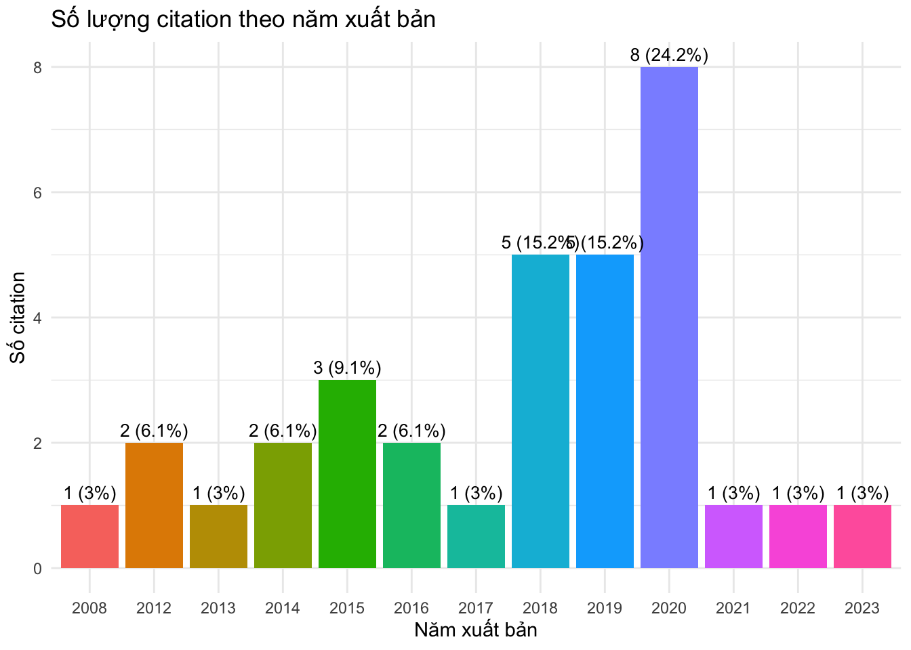
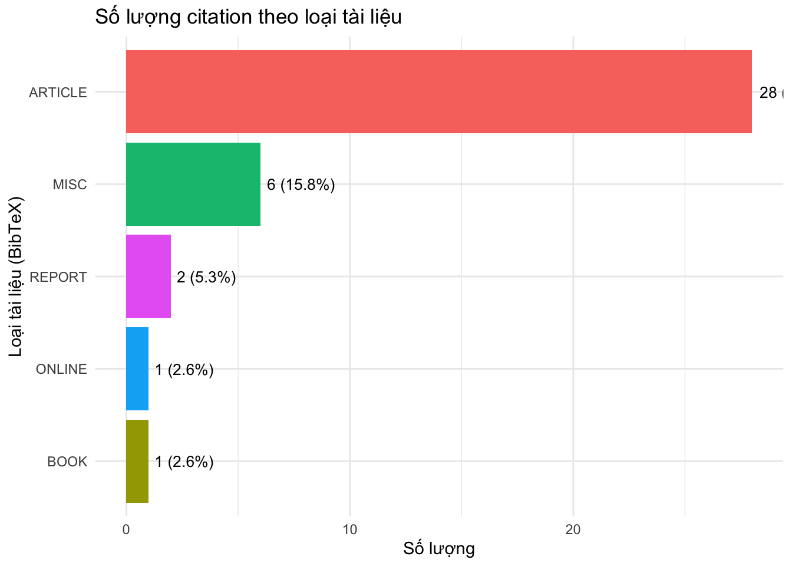

if (!require("pacman")) install.packages("pacman") Loading required package: pacmanpacman::p_load(bib2df, tidyverse, flextable, officer, glue, scales, rvg, forcats, citr)if (!require("pacman")) install.packages("pacman") Loading required package: pacmanpacman::p_load(bib2df, tidyverse, flextable, officer, glue, scales, rvg, forcats, citr)tltk <- bib2df("sstt_reference.bib")# Chọn các trường quan trọng để mô tả citation
citation_summary <- tltk %>%
select(BIBTEXKEY, AUTHOR, TITLE, YEAR, CATEGORY, JOURNAL, PUBLISHER) %>%
mutate(
YEAR = as.character(YEAR),
AUTHOR = str_trunc(AUTHOR, 50), # cắt ngắn tác giả nếu quá dài
TITLE = str_trunc(TITLE, 80) # cắt ngắn tiêu đề nếu quá dài
)Warning: There were 2 warnings in `mutate()`.
The first warning was:
ℹ In argument: `AUTHOR = str_trunc(AUTHOR, 50)`.
Caused by warning in `stri_length()`:
! argument is not an atomic vector; coercing
ℹ Run `dplyr::last_dplyr_warnings()` to see the 1 remaining warning.# Tạo bảng bằng flextable
flextable::flextable(citation_summary) %>%
flextable::set_caption("📚 Bảng mô tả các mục trích dẫn từ file BibTeX") %>%
flextable::autofit()BIBTEXKEY | AUTHOR | TITLE | YEAR | CATEGORY | JOURNAL | PUBLISHER |
|---|---|---|---|---|---|---|
nguyen2020mmse | [[character]] | Mối liên hệ giữa MMSE và các test nhận thức trong sàng lọc sa sút trí tuệ ở n... | 2020 | ARTICLE | Tạp chí Y học Lão khoa Việt Nam | |
tran2021tri_nho | [[character]] | Đánh giá trí nhớ trì hoãn và điểm MMSE ở người cao tuổi có rối loạn nhận thức... | 2021 | ARTICLE | Y học Việt Nam | |
ivnik1990avlt | [[character]] | Testing normal older adults: Mayo's older Americans normative studies | 1990 | ARTICLE | Clin Neuropsychol | |
welsh1994cerad | [[character]] | Detection and staging of dementia in Alzheimer's disease: use of the CERAD ne... | 1994 | ARTICLE | Arch Neurol | |
sarazin2007amnestic | [[character]] | Amnestic syndrome of the medial temporal type identifies prodromal AD: a long... | 2007 | ARTICLE | Neurology | |
Petersen2014 | [[character]] | Mild cognitive impairment: clinical characterization and outcome | 2014 | ARTICLE | Arch Neurol | |
WHO2023 | [[character]] | Dementia Fact Sheet | 2023 | ONLINE | ||
Nguyen2020 | [[character]] | Prevalence of dementia and MCI among older adults in Vietnam: A community-bas... | 2020 | ARTICLE | Vietnam Journal of Geriatrics | |
Selkoe2012 | [[character]] | Preventing Alzheimer's disease | 2012 | ARTICLE | Science | |
Cummings2019 | [[character]] | Biomarkers in Alzheimer’s disease drug development | 2019 | ARTICLE | Alzheimers Dement | |
DSM5 | [[character]] | Diagnostic and Statistical Manual of Mental Disorders, Fifth Edition (DSM-5) | 2013 | BOOK | American Psychiatric Publishing | |
nguyen2020dementia | [[character]] | Towards the development of Vietnam's national dementia plan—the first step of... | 2020 | ARTICLE | Australasian Journal on Ageing | |
livingston2020lancet | [[character]] | Dementia prevention, intervention, and care: 2020 report of the Lancet Commis... | 2020 | ARTICLE | The Lancet | |
livingston2020lancet | [[character]] | Dementia prevention, intervention, and care: 2020 report of the Lancet Commis... | 2020 | ARTICLE | The Lancet | |
petersen2018mci | [[character]] | Practice guideline update summary: Mild cognitive impairment | 2018 | ARTICLE | Neurology | |
petersen2018mci | [[character]] | Practice guideline update summary: Mild cognitive impairment | 2018 | ARTICLE | Neurology | |
petersen2018mci | [[character]] | Practice guideline update summary: Mild cognitive impairment | 2018 | ARTICLE | Neurology | |
petersen2018mci | [[character]] | Practice guideline update summary: Mild cognitive impairment | 2018 | ARTICLE | Neurology | |
jack2018nia | [[character]] | NIA-AA Research Framework: Toward a biological definition of Alzheimer's disease | 2018 | ARTICLE | Alzheimer's & Dementia | |
stern2012cognitive | [[character]] | Cognitive reserve in ageing and Alzheimer's disease | 2012 | ARTICLE | The Lancet Neurology | |
fillenbaum2008cerad | [[character]] | Consortium to Establish a Registry for Alzheimer's Disease (CERAD): The first... | 2008 | ARTICLE | Alzheimer Disease & Associated Disorders | |
hao2020 | [[character]] | Khảo sát tình trạng suy giảm nhận thức ở người cao tuổi tại một phường nội th... | 2020 | ARTICLE | Tạp chí Y học Cộng đồng | |
tran2020vinhlonghocvan | [[character]] | Ảnh hưởng của trình độ học vấn đến sa sút trí tuệ ở người cao tuổi tại Vĩnh Long | 2020 | ARTICLE | Tạp chí Y học Thực hành | |
tran2020vinhlonghocvan | [[character]] | Ảnh hưởng của trình độ học vấn đến sa sút trí tuệ ở người cao tuổi tại Vĩnh Long | 2020 | ARTICLE | Tạp chí Y học Thực hành | |
hao2020 | [[character]] | Khảo sát tình trạng suy giảm nhận thức ở người cao tuổi tại một phường nội th... | 2020 | ARTICLE | Tạp chí Y học Cộng đồng | |
le2019travinhsstt | [[character]] | Khảo sát tỷ lệ sa sút trí tuệ ở người cao tuổi tại tỉnh Trà Vinh và một số yế... | 2019 | ARTICLE | Tạp chí Y học Dự phòng | |
tran2016mmse | [[character]] | Đánh giá phân độ sa sút trí tuệ bằng thang MMSE và mối liên quan với tuổi, họ... | 2016 | ARTICLE | Tạp chí Y học Việt Nam | |
tran2016mmse | [[character]] | Đánh giá phân độ sa sút trí tuệ bằng thang MMSE và mối liên quan với tuổi, họ... | 2016 | ARTICLE | Tạp chí Y học Việt Nam | |
nhung2014 | [[character]] | Tỷ lệ và một số yếu tố liên quan đến sa sút trí tuệ ở người cao tuổi tại Hà Nội | 2014 | ARTICLE | Tạp chí Y học Thực hành | |
aihw2022dementia | [[character]] | Dementia in Australia | 2022 | MISC | AIHW, Australian Government | |
who2021dementia | [[character]] | Dementia | 2021 | MISC | ||
helpage2019vietnam | [[character]] | Ageing Population in Vietnam | 2019 | MISC | ||
who2019risk | [[character]] | Risk Reduction of Cognitive Decline and Dementia: WHO Guidelines | 2019 | MISC | ||
who2019risk | [[character]] | Risk Reduction of Cognitive Decline and Dementia: WHO Guidelines | 2019 | MISC | ||
tong2017ageing | [[character]] | Vietnam Struggling with Ageing Population | 2017 | MISC | ||
prince2015world | [[character]] | World Alzheimer Report 2015: The Global Impact of Dementia | 2015 | REPORT | ||
prince2015world | [[character]] | World Alzheimer Report 2015: The Global Impact of Dementia | 2015 | ARTICLE | ||
prince2015world | [[character]] | World Alzheimer Report 2015: The Global Impact of Dementia | 2015 | REPORT |
# Chuẩn bị dữ liệu
year_summary <- tltk %>%
filter(!is.na(YEAR)) %>%
count(YEAR) %>%
mutate(percent = n / sum(n) * 100)
# Vẽ biểu đồ với màu riêng cho từng năm
ggplot(year_summary, aes(x = factor(YEAR), y = n, fill = factor(YEAR))) +
geom_col(show.legend = FALSE) +
geom_text(aes(label = glue("{n} ({round(percent,1)}%)")), vjust = -0.5, size = 3.5) +
labs(
title = "Số lượng citation theo năm xuất bản",
x = "Năm xuất bản",
y = "Số citation"
) +
theme_minimal()
category_summary <- tltk %>%
filter(!is.na(CATEGORY)) %>%
count(CATEGORY) %>%
mutate(percent = n / sum(n) * 100)
# Vẽ biểu đồ
ggplot(category_summary, aes(x = fct_reorder(CATEGORY, n), y = n, fill = CATEGORY)) +
geom_col(show.legend = FALSE) +
geom_text(aes(label = glue("{n} ({round(percent,1)}%)")), hjust = -0.1, size = 3.5) +
coord_flip() +
labs(
title = "Số lượng citation theo loại tài liệu",
x = "Loại tài liệu (BibTeX)",
y = "Số lượng"
) +
theme_minimal()
duplicated_entries <- tltk %>%
filter(duplicated(TITLE))flextable::flextable(duplicated_entries)CATEGORY | BIBTEXKEY | ADDRESS | ANNOTE | AUTHOR | BOOKTITLE | CHAPTER | CROSSREF | EDITION | EDITOR | HOWPUBLISHED | INSTITUTION | JOURNAL | KEY | MONTH | NOTE | NUMBER | ORGANIZATION | PAGES | PUBLISHER | SCHOOL | SERIES | TITLE | TYPE | VOLUME | YEAR | LANGUAGE | DOI | URL |
|---|---|---|---|---|---|---|---|---|---|---|---|---|---|---|---|---|---|---|---|---|---|---|---|---|---|---|---|---|
ARTICLE | livingston2020lancet | [[character]] | [[character]] | The Lancet | 10248 | 413--446 | Dementia prevention, intervention, and care: 2020 report of the Lancet Commission | 396 | 2,020 | 10.1016/S0140-6736(20)30367-6 | ||||||||||||||||||
ARTICLE | petersen2018mci | [[character]] | [[character]] | Neurology | 3 | 126--135 | Practice guideline update summary: Mild cognitive impairment | 90 | 2,018 | 10.1212/WNL.0000000000004826 | ||||||||||||||||||
ARTICLE | petersen2018mci | [[character]] | [[character]] | Neurology | 3 | 126--135 | Practice guideline update summary: Mild cognitive impairment | 90 | 2,018 | 10.1212/WNL.0000000000004826 | ||||||||||||||||||
ARTICLE | petersen2018mci | [[character]] | [[character]] | Neurology | 3 | 126--135 | Practice guideline update summary: Mild cognitive impairment | 90 | 2,018 | 10.1212/WNL.0000000000004826 | ||||||||||||||||||
ARTICLE | tran2020vinhlonghocvan | [[character]] | [[character]] | Tạp chí Y học Thực hành | 110--118 | Ảnh hưởng của trình độ học vấn đến sa sút trí tuệ ở người cao tuổi tại Vĩnh Long | 1080 | 2,020 | ||||||||||||||||||||
ARTICLE | hao2020 | [[character]] | [[character]] | Tạp chí Y học Cộng đồng | 4 | 45--50 | Khảo sát tình trạng suy giảm nhận thức ở người cao tuổi tại một phường nội thành TP. Hồ Chí Minh | 60 | 2,020 | |||||||||||||||||||
ARTICLE | tran2016mmse | [[character]] | [[character]] | Tạp chí Y học Việt Nam | 23--29 | Đánh giá phân độ sa sút trí tuệ bằng thang MMSE và mối liên quan với tuổi, học vấn, giới tính ở người cao tuổi | 436 | 2,016 | ||||||||||||||||||||
MISC | who2019risk | [[character]] | [[character]] | Accessed: 2025-04-23 | Risk Reduction of Cognitive Decline and Dementia: WHO Guidelines | 2,019 | ||||||||||||||||||||||
ARTICLE | prince2015world | [[character]] | [[character]] | World Alzheimer Report 2015: The Global Impact of Dementia | 2,015 | |||||||||||||||||||||||
REPORT | prince2015world | [[character]] | [[character]] | World Alzheimer Report 2015: The Global Impact of Dementia | 2,015 |
duplicated_title_year <- tltk %>%
group_by(TITLE, YEAR) %>%
filter(n() > 1) %>%
ungroup()flextable::flextable(duplicated_title_year)CATEGORY | BIBTEXKEY | ADDRESS | ANNOTE | AUTHOR | BOOKTITLE | CHAPTER | CROSSREF | EDITION | EDITOR | HOWPUBLISHED | INSTITUTION | JOURNAL | KEY | MONTH | NOTE | NUMBER | ORGANIZATION | PAGES | PUBLISHER | SCHOOL | SERIES | TITLE | TYPE | VOLUME | YEAR | LANGUAGE | DOI | URL |
|---|---|---|---|---|---|---|---|---|---|---|---|---|---|---|---|---|---|---|---|---|---|---|---|---|---|---|---|---|
ARTICLE | livingston2020lancet | [[character]] | [[character]] | The Lancet | 10248 | 413--446 | Dementia prevention, intervention, and care: 2020 report of the Lancet Commission | 396 | 2,020 | 10.1016/S0140-6736(20)30367-6 | ||||||||||||||||||
ARTICLE | livingston2020lancet | [[character]] | [[character]] | The Lancet | 10248 | 413--446 | Dementia prevention, intervention, and care: 2020 report of the Lancet Commission | 396 | 2,020 | 10.1016/S0140-6736(20)30367-6 | ||||||||||||||||||
ARTICLE | petersen2018mci | [[character]] | [[character]] | Neurology | 3 | 126--135 | Practice guideline update summary: Mild cognitive impairment | 90 | 2,018 | 10.1212/WNL.0000000000004826 | ||||||||||||||||||
ARTICLE | petersen2018mci | [[character]] | [[character]] | Neurology | 3 | 126--135 | Practice guideline update summary: Mild cognitive impairment | 90 | 2,018 | 10.1212/WNL.0000000000004826 | ||||||||||||||||||
ARTICLE | petersen2018mci | [[character]] | [[character]] | Neurology | 3 | 126--135 | Practice guideline update summary: Mild cognitive impairment | 90 | 2,018 | 10.1212/WNL.0000000000004826 | ||||||||||||||||||
ARTICLE | petersen2018mci | [[character]] | [[character]] | Neurology | 3 | 126--135 | Practice guideline update summary: Mild cognitive impairment | 90 | 2,018 | 10.1212/WNL.0000000000004826 | ||||||||||||||||||
ARTICLE | hao2020 | [[character]] | [[character]] | Tạp chí Y học Cộng đồng | 4 | 45--50 | Khảo sát tình trạng suy giảm nhận thức ở người cao tuổi tại một phường nội thành TP. Hồ Chí Minh | 60 | 2,020 | |||||||||||||||||||
ARTICLE | tran2020vinhlonghocvan | [[character]] | [[character]] | Tạp chí Y học Thực hành | 110--118 | Ảnh hưởng của trình độ học vấn đến sa sút trí tuệ ở người cao tuổi tại Vĩnh Long | 1080 | 2,020 | ||||||||||||||||||||
ARTICLE | tran2020vinhlonghocvan | [[character]] | [[character]] | Tạp chí Y học Thực hành | 110--118 | Ảnh hưởng của trình độ học vấn đến sa sút trí tuệ ở người cao tuổi tại Vĩnh Long | 1080 | 2,020 | ||||||||||||||||||||
ARTICLE | hao2020 | [[character]] | [[character]] | Tạp chí Y học Cộng đồng | 4 | 45--50 | Khảo sát tình trạng suy giảm nhận thức ở người cao tuổi tại một phường nội thành TP. Hồ Chí Minh | 60 | 2,020 | |||||||||||||||||||
ARTICLE | tran2016mmse | [[character]] | [[character]] | Tạp chí Y học Việt Nam | 23--29 | Đánh giá phân độ sa sút trí tuệ bằng thang MMSE và mối liên quan với tuổi, học vấn, giới tính ở người cao tuổi | 436 | 2,016 | ||||||||||||||||||||
ARTICLE | tran2016mmse | [[character]] | [[character]] | Tạp chí Y học Việt Nam | 23--29 | Đánh giá phân độ sa sút trí tuệ bằng thang MMSE và mối liên quan với tuổi, học vấn, giới tính ở người cao tuổi | 436 | 2,016 | ||||||||||||||||||||
MISC | who2019risk | [[character]] | [[character]] | Accessed: 2025-04-26 | Risk Reduction of Cognitive Decline and Dementia: WHO Guidelines | 2,019 | ||||||||||||||||||||||
MISC | who2019risk | [[character]] | [[character]] | Accessed: 2025-04-23 | Risk Reduction of Cognitive Decline and Dementia: WHO Guidelines | 2,019 | ||||||||||||||||||||||
REPORT | prince2015world | [[character]] | [[character]] | World Alzheimer Report 2015: The Global Impact of Dementia | 2,015 | |||||||||||||||||||||||
ARTICLE | prince2015world | [[character]] | [[character]] | World Alzheimer Report 2015: The Global Impact of Dementia | 2,015 | |||||||||||||||||||||||
REPORT | prince2015world | [[character]] | [[character]] | World Alzheimer Report 2015: The Global Impact of Dementia | 2,015 |
# Kiểm tra các bibkey bị trùng
duplicated_keys <- tltk %>%
filter(duplicated(BIBTEXKEY) | duplicated(BIBTEXKEY, fromLast = TRUE))flextable::flextable(duplicated_keys)CATEGORY | BIBTEXKEY | ADDRESS | ANNOTE | AUTHOR | BOOKTITLE | CHAPTER | CROSSREF | EDITION | EDITOR | HOWPUBLISHED | INSTITUTION | JOURNAL | KEY | MONTH | NOTE | NUMBER | ORGANIZATION | PAGES | PUBLISHER | SCHOOL | SERIES | TITLE | TYPE | VOLUME | YEAR | LANGUAGE | DOI | URL |
|---|---|---|---|---|---|---|---|---|---|---|---|---|---|---|---|---|---|---|---|---|---|---|---|---|---|---|---|---|
ARTICLE | livingston2020lancet | [[character]] | [[character]] | The Lancet | 10248 | 413--446 | Dementia prevention, intervention, and care: 2020 report of the Lancet Commission | 396 | 2,020 | 10.1016/S0140-6736(20)30367-6 | ||||||||||||||||||
ARTICLE | livingston2020lancet | [[character]] | [[character]] | The Lancet | 10248 | 413--446 | Dementia prevention, intervention, and care: 2020 report of the Lancet Commission | 396 | 2,020 | 10.1016/S0140-6736(20)30367-6 | ||||||||||||||||||
ARTICLE | petersen2018mci | [[character]] | [[character]] | Neurology | 3 | 126--135 | Practice guideline update summary: Mild cognitive impairment | 90 | 2,018 | 10.1212/WNL.0000000000004826 | ||||||||||||||||||
ARTICLE | petersen2018mci | [[character]] | [[character]] | Neurology | 3 | 126--135 | Practice guideline update summary: Mild cognitive impairment | 90 | 2,018 | 10.1212/WNL.0000000000004826 | ||||||||||||||||||
ARTICLE | petersen2018mci | [[character]] | [[character]] | Neurology | 3 | 126--135 | Practice guideline update summary: Mild cognitive impairment | 90 | 2,018 | 10.1212/WNL.0000000000004826 | ||||||||||||||||||
ARTICLE | petersen2018mci | [[character]] | [[character]] | Neurology | 3 | 126--135 | Practice guideline update summary: Mild cognitive impairment | 90 | 2,018 | 10.1212/WNL.0000000000004826 | ||||||||||||||||||
ARTICLE | hao2020 | [[character]] | [[character]] | Tạp chí Y học Cộng đồng | 4 | 45--50 | Khảo sát tình trạng suy giảm nhận thức ở người cao tuổi tại một phường nội thành TP. Hồ Chí Minh | 60 | 2,020 | |||||||||||||||||||
ARTICLE | tran2020vinhlonghocvan | [[character]] | [[character]] | Tạp chí Y học Thực hành | 110--118 | Ảnh hưởng của trình độ học vấn đến sa sút trí tuệ ở người cao tuổi tại Vĩnh Long | 1080 | 2,020 | ||||||||||||||||||||
ARTICLE | tran2020vinhlonghocvan | [[character]] | [[character]] | Tạp chí Y học Thực hành | 110--118 | Ảnh hưởng của trình độ học vấn đến sa sút trí tuệ ở người cao tuổi tại Vĩnh Long | 1080 | 2,020 | ||||||||||||||||||||
ARTICLE | hao2020 | [[character]] | [[character]] | Tạp chí Y học Cộng đồng | 4 | 45--50 | Khảo sát tình trạng suy giảm nhận thức ở người cao tuổi tại một phường nội thành TP. Hồ Chí Minh | 60 | 2,020 | |||||||||||||||||||
ARTICLE | tran2016mmse | [[character]] | [[character]] | Tạp chí Y học Việt Nam | 23--29 | Đánh giá phân độ sa sút trí tuệ bằng thang MMSE và mối liên quan với tuổi, học vấn, giới tính ở người cao tuổi | 436 | 2,016 | ||||||||||||||||||||
ARTICLE | tran2016mmse | [[character]] | [[character]] | Tạp chí Y học Việt Nam | 23--29 | Đánh giá phân độ sa sút trí tuệ bằng thang MMSE và mối liên quan với tuổi, học vấn, giới tính ở người cao tuổi | 436 | 2,016 | ||||||||||||||||||||
MISC | who2019risk | [[character]] | [[character]] | Accessed: 2025-04-26 | Risk Reduction of Cognitive Decline and Dementia: WHO Guidelines | 2,019 | ||||||||||||||||||||||
MISC | who2019risk | [[character]] | [[character]] | Accessed: 2025-04-23 | Risk Reduction of Cognitive Decline and Dementia: WHO Guidelines | 2,019 | ||||||||||||||||||||||
REPORT | prince2015world | [[character]] | [[character]] | World Alzheimer Report 2015: The Global Impact of Dementia | 2,015 | |||||||||||||||||||||||
ARTICLE | prince2015world | [[character]] | [[character]] | World Alzheimer Report 2015: The Global Impact of Dementia | 2,015 | |||||||||||||||||||||||
REPORT | prince2015world | [[character]] | [[character]] | World Alzheimer Report 2015: The Global Impact of Dementia | 2,015 |